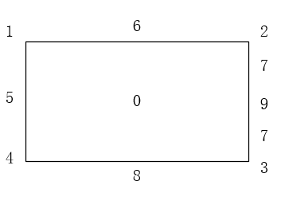

|
类型 |
HMI |
|
描述 |
用于HMI控件交互调整旋转矩形roi，应用于HMI自定义控件的刷新函数内，实现通过鼠标实时调整旋转矩形roi的位置和大小。 使用方法：鼠标按下时，根据鼠标位置所处在roi区域的不同，调整的功能也不同，该区域为对应的具有调整功能的击中区域。 旋转矩形包含10个击中区域（编号0-9，分别对应中心、左上角点、右上角点、右下角点、左下角点、左边、上边、右边、下边、右边中点附近即角度击中区域），中心击中区域用于调整位置、四角击中区域用于调整各角对应的两条边、四边击中区域用于调整对应的边(当前边和对立的边都调整)、角度击中区域用于调整旋转角度
注：旋转矩形角度基于图像坐标系，顺时针为正，单位度数 旋转矩形击中区域编号示意图如下：  |
|
语法 |
hittype=ZV_HmiAdjRect2(mousex,mousey,tabId,hitType,maxHitDist=0)
参数： mousex：HMI控件的鼠标x坐标 mousey：HMI控件的鼠标y坐标 tabId：保存旋转矩形roi参数的TABLE索引，依次为cx、cy、width、height、angle，即旋转矩形的中心坐标cx、cy、宽、高、角度，对应的是hmi控件坐标系下的值，调整后的值将直接替换调整前的值 hitType：指定击中区域编号，表示指令要调整的矩形对应部分，为-1时表示无效编号，则指令内部自行判断击中情况；为有效编号时则调整矩形对应的部分。通常情况按下鼠标左键时传入-1，指令内部判断击中位置并返回，如果返回值为-1则无调整动作，返回值为有效区域编号则后续鼠标移动过程以该返回值为新的传入参数继续调用本指令以实现连续调整 maxHitDist：选中“击中区域”的最大距离，小于此距离才选中，为0时不受距离限制
返回值： hittype：传入有效击中编号时，返回该编号；传入无效击中编号时指令根据鼠标点击位置计算击中区域编号并返回，无击中区域返回-1。 |
|
适用控制器 |
支持ZV功能或者5系列以上的控制器 |
|
例子 |
hittype = ZV_HmiAdjRect2(mousex,mousey,tabId,-1) '获取鼠标点击位置对应的击中区域编号 ZV_HmiAdjRect2(mousex,mousey,tabId,hittype) '指定击中区域编号，调整对应的矩形部分 |